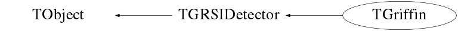

class TGriffin: public TGRSIDetector
Function Members (Methods)
public:
| TGriffin() | |
| TGriffin(const TGriffin&) | |
| virtual | ~TGriffin() |
| void | TObject::AbstractMethod(const char* method) const |
| virtual void | TObject::AppendPad(Option_t* option = "") |
| virtual void | TObject::Browse(TBrowser* b) |
| void | BuildAddBack(Option_t* opt = "") |
| virtual void | BuildHits(TGRSIDetectorData* data = 0, Option_t* opt = "") |
| static TClass* | Class() |
| virtual const char* | TObject::ClassName() const |
| virtual void | Clear(Option_t* opt = "") |
| virtual TObject* | TObject::Clone(const char* newname = "") const |
| virtual Int_t | TObject::Compare(const TObject* obj) const |
| virtual void | TObject::Copy(TObject& object) const |
| virtual void | TObject::Delete(Option_t* option = "")MENU |
| virtual Int_t | TObject::DistancetoPrimitive(Int_t px, Int_t py) |
| virtual void | TObject::Draw(Option_t* option = "") |
| virtual void | TObject::DrawClass() constMENU |
| virtual TObject* | TObject::DrawClone(Option_t* option = "") constMENU |
| virtual void | TObject::Dump() constMENU |
| virtual void | TObject::Error(const char* method, const char* msgfmt) const |
| virtual void | TObject::Execute(const char* method, const char* params, Int_t* error = 0) |
| virtual void | TObject::Execute(TMethod* method, TObjArray* params, Int_t* error = 0) |
| virtual void | TObject::ExecuteEvent(Int_t event, Int_t px, Int_t py) |
| virtual void | TObject::Fatal(const char* method, const char* msgfmt) const |
| void | FillBGOData(TFragment*, TChannel*, MNEMONIC*) |
| virtual void | FillData(TFragment*, TChannel*, MNEMONIC*) |
| virtual TObject* | TObject::FindObject(const char* name) const |
| virtual TObject* | TObject::FindObject(const TObject* obj) const |
| TGriffinHit* | GetAddBackHit(int i) |
| Short_t | GetAddBackMultiplicity() const |
| TGRSIDetectorData* | TGRSIDetector::GetData() |
| virtual Option_t* | TObject::GetDrawOption() const |
| static Long_t | TObject::GetDtorOnly() |
| TGriffinHit* | GetGriffinHit(int i) |
| virtual const char* | TObject::GetIconName() const |
| Short_t | GetMultiplicity() const |
| virtual const char* | TObject::GetName() const |
| virtual char* | TObject::GetObjectInfo(Int_t px, Int_t py) const |
| static Bool_t | TObject::GetObjectStat() |
| virtual Option_t* | TObject::GetOption() const |
| static TVector3 | GetPosition(int DetNbr, int CryNbr, double distance = 110.0) |
| virtual const char* | TObject::GetTitle() const |
| virtual UInt_t | TObject::GetUniqueID() const |
| virtual Bool_t | TObject::HandleTimer(TTimer* timer) |
| virtual ULong_t | TObject::Hash() const |
| virtual void | TObject::Info(const char* method, const char* msgfmt) const |
| virtual Bool_t | TObject::InheritsFrom(const char* classname) const |
| virtual Bool_t | TObject::InheritsFrom(const TClass* cl) const |
| virtual void | TObject::Inspect() constMENU |
| void | TObject::InvertBit(UInt_t f) |
| virtual TClass* | IsA() const |
| virtual Bool_t | TObject::IsEqual(const TObject* obj) const |
| virtual Bool_t | TObject::IsFolder() const |
| Bool_t | TObject::IsOnHeap() const |
| virtual Bool_t | TObject::IsSortable() const |
| Bool_t | TObject::IsZombie() const |
| virtual void | TObject::ls(Option_t* option = "") const |
| void | TObject::MayNotUse(const char* method) const |
| virtual Bool_t | TObject::Notify() |
| void | TObject::Obsolete(const char* method, const char* asOfVers, const char* removedFromVers) const |
| static void | TObject::operator delete(void* ptr) |
| static void | TObject::operator delete(void* ptr, void* vp) |
| static void | TObject::operator delete[](void* ptr) |
| static void | TObject::operator delete[](void* ptr, void* vp) |
| void* | TObject::operator new(size_t sz) |
| void* | TObject::operator new(size_t sz, void* vp) |
| void* | TObject::operator new[](size_t sz) |
| void* | TObject::operator new[](size_t sz, void* vp) |
| TGriffin& | operator=(const TGriffin&) |
| virtual void | TObject::Paint(Option_t* option = "") |
| virtual void | TObject::Pop() |
| virtual void | Print(Option_t* opt = "") |
| virtual Int_t | TObject::Read(const char* name) |
| virtual void | TObject::RecursiveRemove(TObject* obj) |
| void | TObject::ResetBit(UInt_t f) |
| virtual void | TObject::SaveAs(const char* filename = "", Option_t* option = "") constMENU |
| virtual void | TObject::SavePrimitive(ostream& out, Option_t* option = "") |
| static bool | SetBGOHits() |
| static bool | SetBGOWave() |
| void | TObject::SetBit(UInt_t f) |
| void | TObject::SetBit(UInt_t f, Bool_t set) |
| static bool | SetCoreWave() |
| virtual void | TObject::SetDrawOption(Option_t* option = "")MENU |
| static void | TObject::SetDtorOnly(void* obj) |
| static void | TObject::SetObjectStat(Bool_t stat) |
| virtual void | TObject::SetUniqueID(UInt_t uid) |
| virtual void | ShowMembers(TMemberInspector&) |
| virtual void | Streamer(TBuffer&) |
| void | StreamerNVirtual(TBuffer& ClassDef_StreamerNVirtual_b) |
| virtual void | TObject::SysError(const char* method, const char* msgfmt) const |
| Bool_t | TObject::TestBit(UInt_t f) const |
| Int_t | TObject::TestBits(UInt_t f) const |
| virtual void | TObject::UseCurrentStyle() |
| virtual void | TObject::Warning(const char* method, const char* msgfmt) const |
| virtual Int_t | TObject::Write(const char* name = 0, Int_t option = 0, Int_t bufsize = 0) |
| virtual Int_t | TObject::Write(const char* name = 0, Int_t option = 0, Int_t bufsize = 0) const |
protected:
| virtual void | TObject::DoError(int level, const char* location, const char* fmt, va_list va) const |
| void | TObject::MakeZombie() |
private:
| static void | InitCloverPositions() |
Data Members
public:
| enum TObject::EStatusBits { | kCanDelete | |
| kMustCleanup | ||
| kObjInCanvas | ||
| kIsReferenced | ||
| kHasUUID | ||
| kCannotPick | ||
| kNoContextMenu | ||
| kInvalidObject | ||
| }; | ||
| enum TObject::[unnamed] { | kIsOnHeap | |
| kNotDeleted | ||
| kZombie | ||
| kBitMask | ||
| kSingleKey | ||
| kOverwrite | ||
| kWriteDelete | ||
| }; |
private:
| vector<TGriffinHit> | addback_hits | The set of add-back hits |
| TBGOData* | bgodata | Used to build BGO Hits |
| static bool | fSetBGOHits | ! Flag that determines if BGOHits are being measured |
| static bool | fSetBGOWave | ! Flag for BGO Waveforms ON/OFF |
| static bool | fSetCoreWave | ! Flag for Waveforms ON/OFF |
| static TVector3 | gCloverPosition[17] | Position of each HPGe Clover |
| static bool | gCloverPositionSet | Flag for if the clover positions have been set |
| TGriffinData* | grifdata | Used to build GRIFFIN Hits |
| vector<TGriffinHit> | griffin_hits | The set of crystal hits |
Class Charts
{kind=link}
{kind=link}
{kind=link}
{kind=link}

Function documentation
void InitCloverPositions()
Initiallizes the HPGe Clover positions as per the wiki <https://www.triumf.info/wiki/tigwiki/index.php/HPGe_Coordinate_Table>
void FillData(TFragment* , TChannel* , MNEMONIC* )
Fills the "Data" structure for a specific channel with TFragment frag.
void FillBGOData(TFragment* , TChannel* , MNEMONIC* )
Fills the BGO "Data" Structure for a specific channel with the TFragment frag.
void BuildHits(TGRSIDetectorData* data = 0, Option_t* opt = "")
Builds the GRIFFIN Hits from the "data" structure. Basically, loops through the data for and event and sets observables.
This is done for both GRIFFIN and it's suppressors.
TVector3 GetPosition(int DetNbr, int CryNbr, double distance = 110.0)
Gets the position vector for a crystal specified by CryNbr within Clover DetNbr at a distance of dist mm away. This is calculated to the most likely interaction point within the crystal.
void BuildAddBack(Option_t* opt = "")
Builds the addback for the GRIFFIN Event. This is based on a resolution set within the function. This will have to be tuned in order to make add-back the most efficient.
TGriffin()